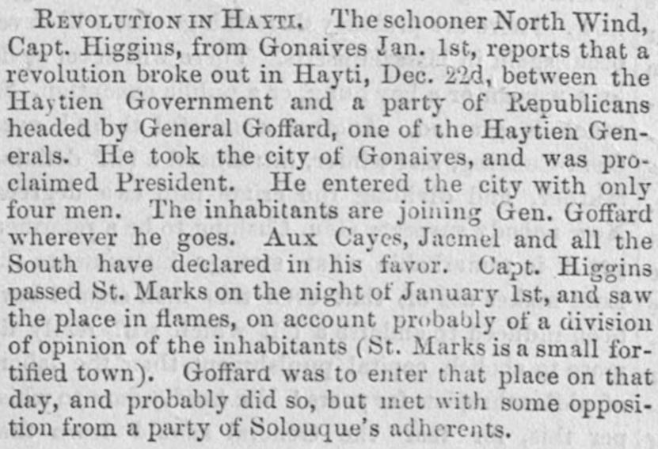

Marks on the night of January Ist, and saw the placeMarks en la noche del 1 de enero, y vio el lugar
According to The Liberator, an insurrection is underway in Hayti, with General Goffard—who entered the city with four men—gaining support across Aux Cayes, Jacmel, and the South, while St. Marks was seen in flames following likely divisions among its inhabitants. Quoting the New York Herald, the newspaper reports that the island spans 29,000 square miles, divided between the empire of Hayti (population 650,000; army of 20,000; plus a navy of four small vessels and one steamer) and the Dominican republic (population 150,000, with an army of 12,000), noting that the island's productiveness has declined under corrupt rule despite its rich soil and delightful climate.Según The Liberator, una insurrección está en marcha en Haití, en la que el general Goffard —quien entró a la ciudad con cuatro hombres— va ganando apoyo en Aux Cayes, Jacmel y el Sur, mientras que Saint-Marc se vio en llamas tras probables divisiones entre sus habitantes. Citando a The New York Herald, el periódico informa que la isla abarca 29.000 millas cuadradas, divididas entre el imperio de Haití (población de 650.000 habitantes; ejército de 20.000 soldados; además de una armada de cuatro embarcaciones pequeñas y un vapor) y la República Dominicana (población de 150.000 habitantes, con un ejército de 12.000 hombres), señalando que la productividad de la isla ha disminuido bajo un gobierno corrupto a pesar de su suelo fértil y su clima agradable.
FULL TEXT:TRADUCCIÓN:
REVOLUTION IN HAYTI. The schooner North Wind, Capt. Higgins, from Gonaives Jan. 1st, reports that a revolution broke out in Hayti, Dec. 22d, between the Haytien Government and a party of Republicans headed by General Goffard, one of the Haytien Generals. He took the city of Gonaives, and was proclaimed President. He entered the city with only four men. The inhabitants are joining Gen. Goffard wherever he goes. Aux Cayes, Jacmel and all the South have declared in his favor. Capt. Higgins passed St. Marks on the night of January 1st, and saw the place in flames, on account probably of a division of opinion of the inhabitants (St. Marks is a small fortified town). Goffard was to enter that place on that day, and probably did so, but met with some opposition from a party of Solouque’s adherents.REVOLUCIÓN EN HAITÍ. La goleta North Wind, capitán Higgins, procedente de Gonaïves el 1 de enero, informa que una revolución estalló en Haití, el 22 de diciembre, entre el Gobierno Haitiano y un partido de Republicanos encabezado por el General Goffard, uno de los Generales haitianos. Tomó la ciudad de Gonaïves, y fue proclamado Presidente. Entró en la ciudad con solo cuatro hombres. Los habitantes se están uniendo al General Goffard dondequiera que va. Aux Cayes, Jacmel y todo el Sur se han declarado a su favor. El capitán Higgins pasó San Marcos en la noche del 1 de enero, y vio el lugar en llamas, por cuenta probablemente de una división de opinión de los habitantes (San Marcos es un pequeño pueblo fortificado). Goffard había de entrar en ese lugar ese día, y probablemente lo hizo, pero se encontró con alguna oposición de un partido de adherentes de Soulouque.
The Liberator. Boston, Mass., January 28, 1859. Page 3.